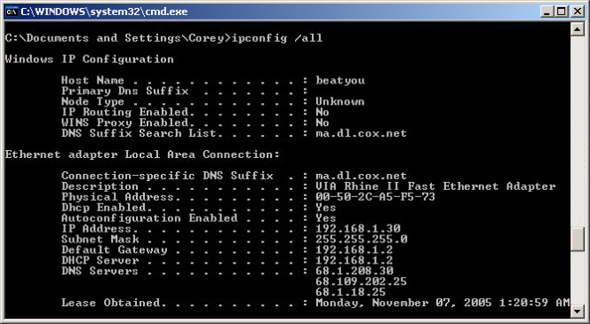

Tecnologías de la Información
"Innovación de hoy para el éxito de mañana"
Plan de estudios
1° Semestre
1° Semestre
- -Introducción a las tecnologías de la información
- -Aprender a aprender
- -Fundamentos de programación
- -Fundamento de redes
- -Desarrollo sustentable y medio ambiente
- -Conversaciones introductorias. Lengua extranjera
2° Semestre
2° Semestre
- -Precálculo
- -Probabilidad y estadistica
- -Programación estructurada avanzada
- -Seguridad en redes de información
- -Electricidad y magnetismo
- -Eventos pasados y futuros. Lengua extranjera

3° Semestre
3° Semestre
- -Cálculo diferencial e integral
- -Álgebra lineal
- -Programación orientada a objetos
- -Diseño de bases de datos
- -Sistemas electrónicos I
- -Logros y experiencias. Lengua extranjera
4° Semestre
4° Semestre
- -Matemáticas discretas
- -Modelado en UML
- -Estructura de datos
- -Administracion de bases de datos
- -Sistemas electrónicos II
- -Decisiones personales. Lengua extranjera
5° Semestre
5° Semestre
- -Métodos numéricos
- -Analisis y diseño de sistemas
- -Desarrollo de aplicaciones web I
- -Desarrollo de aplicaciones móviles
- -Arquitectura de computadoras
- -Causa y efecto. Lengua extranjera

6° Semestre
6° Semestre
- -Administración de las TI
- -Ingenieria en software
- -Desarrollo de aplicaciones web II
- -Fundamentos de metodología de la investigación
- -Optativa I
- -En otras palabras. Lengua extranjera

7° Semestre
7° Semestre
- -Lenguajes y autómatas
- -Internet de las cosas
- -Sistemas operativos
- -Administración de proyectos para las TI
- -Optativa II
- -Preparación para certificación en lengua extranjera
8° Semestre
8° Semestre
- -Cómputo en la nube
- -México multicultural
- -Servicio social
- -Evaluación de proyectos para TI
- -Optativa III
- -Minería de datos

9° Semestre
9° Semestre
- -Prácticas profesionales
- -Proyecto terminal
- -Algoritmos avanzados
- -Interacción humano-computadora